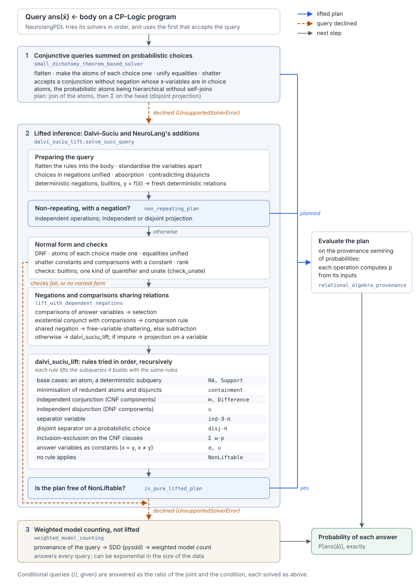

Lifted probabilistic inference#
This page lists the strategies NeuroLang uses to compute the probability of a query exactly by lifted inference, that is by translating the query into a plan of relational algebra operations on probabilities, without grounding the program into a propositional formula. It gives first the algorithms of the literature that NeuroLang implements, whose correctness is that of the papers cited, then NeuroLang’s own additions to them, each with the formula applied, when it applies and, in Correctness of the plans, its proof.
Solvers and their order#
NeurolangPDL tries its solvers in order, and
uses the first one which accepts the query:
neurolang.probabilistic.small_dichotomy_theorem_based_solver, for conjunctive queries without negation whose existential variables all occur in atoms of probabilistic choices, which it computes by a join and a disjoint sum on the head (see Conjunctive queries summed on probabilistic choices);neurolang.probabilistic.dalvi_suciu_lift, which first plans non-repeating queries with negation (see Non-repeating queries with negation and Planning non-repeating queries), and otherwise lifts unions of conjunctive queries with self-joins (see The Dalvi–Suciu algorithm), with NeuroLang’s additions (see NeuroLang’s additions);neurolang.probabilistic.weighted_model_counting, which is not lifted: it compiles the provenance of the query into a sentential decision diagram (SDD) [Darwiche2011] with pysdd and computes its weighted model count [Chavira2008]. It answers every query of the language but can be exponential in the size of the data.


The lifting process. Each lifted solver either gives a plan, evaluated on the provenance semiring of probabilities, or declines the query, which is passed to the next solver. The steps of the second solver are described in Preparing the query, Planning non-repeating queries, Negations and comparisons sharing relations and The Dalvi–Suciu algorithm.#
A lifted solver declines a query by raising an
UnsupportedSolverError, such as NonLiftableException, and the next
one is then tried. The Dalvi–Suciu solver turns the failures of the
conversions to normal forms of a formula outside the fragment they support
(NotInFONegE), and the splits into components it cannot plan, such as a
union with a negated component, into NonLiftableException, so that
declining never depends on check_unate. Other errors are not caught: a
query body with a universal quantifier, given through the Python API, is
rejected when the query is flattened
(flatten_query() raises
UnsupportedProgramError), and weighted model counting is not tried
either. Lifted plans are
computed on the provenance semiring of probabilities
(neurolang.relational_algebra_provenance), whose operations are
listed in Operations of the lifted plans. Conditional queries (//,
given, conditioned to) are answered as the ratio of two such
queries, the joint and the condition.
The probabilistic semantics are those of CP-Logic [Vennekens2009], and the overall approach is described in [Zanitti2023]. Probabilistic facts are tuple-independent relations; probabilistic choices are relations with a single key-less block, where exactly one tuple is true, a special case of block-independent disjoint (BID) relations [Suciu2011].
Operations of the lifted plans#
Each operation computes the probability \(p\) of each tuple of its result from the probabilities of its inputs.
Operation |
Probability |
Used for |
|---|---|---|
|
\(p_1 \, p_2\) |
independent conjunction |
|
\(1 - (1 - p_1)(1 - p_2)\) |
independent disjunction |
|
\(p_1 \, (1 - p_2)\) |
independent negation, \(A \land \lnot B\) |
|
\(p_1 - p_2\) |
\(P[A] - P[A \land B]\), for dependent \(A\) and \(B\) |
|
\(1 - \prod_i (1 - p_i)\) |
existential quantifier on a separator variable |
|
\(\prod_i p_i\) |
not used by the implemented rules (see The Dalvi–Suciu algorithm, separator variable) |
|
\(\sum_i p_i\) |
projection of mutually exclusive tuples |
|
\(\sum_j w_j \, p_j\) |
inclusion–exclusion with Möbius weights |
|
\(1\) |
the tuples of a plan, to give values to its variables |
Algorithms from the literature#
The algorithms of this section are published with their proofs, which apply to the queries they are stated for: NeuroLang implements them, at times with restrictions, which are given, so that a query they decline is not necessarily #P-hard. NeuroLang’s additions extend them beyond these queries.
Conjunctive queries summed on probabilistic choices#
The first solver,
solve_succ_query(),
is a restriction of the disjoint projection of Suciu et al. (see
Disjoint projection on a probabilistic choice), and not an
implementation of the small dichotomy theorem, despite its name. It
accepts a query whose body, once flattened and the atoms of each
probabilistic choice made one (see Preparing the query), is a
conjunction without negation in which
every existential variable of an atom of a probabilistic fact relation also occurs in an atom of a probabilistic choice (
_verify_fact_and_choice_e_quantification);no existential variable occurs in deterministic atoms only (
_verify_deterministic_e_quantification);the probabilistic atoms form a hierarchical query without self-joins (
is_hierarchical_without_self_joins, see The small dichotomy theorem), a further restriction which the plan below does not need.
Its plan is the join of the atoms of the body, followed by the projection
on the head, which the provenance solver computes as a sum of the
probabilities of the tuples it merges
(RelationalAlgebraProvenanceCountingSolverMixin):
\(\bar z\) being the existential variables. This is the disjoint projection, exact because the merged tuples differ on the tuple of a choice and are mutually exclusive (see Correctness of the plans). No completeness is claimed for the solver: the hierarchical query \(\mathit{ans}(x) \leftarrow R(x, y) \land S(y)\) of probabilistic facts, for instance, is declined, as \(y\) occurs in no choice, and is lifted by the next solver. Queries with negations or disjunctions are declined too.
The small dichotomy theorem#
For a conjunctive query in which no relation occurs twice, on tuple-independent relations, the small dichotomy theorem applies [Dalvi2007] [Fink2014]: writing \(at(x)\) for the atoms in which variable \(x\) occurs, the query can be computed in polynomial time if it is hierarchical, that is if for any two variables \(x\) and \(y\),
and is #P-hard otherwise. Each connected component of a hierarchical query has a variable occurring in all of its atoms, on which it is computed by the independent projection, and recursively: this is the separator variable rule of The Dalvi–Suciu algorithm, restricted to queries without self-joins, and the projection of the planner of Planning non-repeating queries, which Fink and Olteanu’s extension of the theorem to negation (see Non-repeating queries with negation) justifies.
The Dalvi–Suciu algorithm#
dalvi_suciu_lift()
implements the algorithm of Dalvi and Suciu for unions of conjunctive
queries on tuple-independent relations [Dalvi2012]. The query is first
shattered and ranked, then its rules are tried in the order below, each
one calling the algorithm on the subqueries it produces. A query to which
no rule applies is marked NonLiftable and declined. Dalvi and Suciu
prove their algorithm complete for unions of conjunctive queries on
tuple-independent databases: a query on which it fails is #P-hard
[Dalvi2012]. The implementation restricts some of its rules, ranking and
inclusion–exclusion, so a query it declines is not necessarily #P-hard.
NeuroLang’s additions are tried in between: independent negation,
the disjoint separator and the guard on the clauses of the conjunctive
normal form (see Extensions of the Dalvi–Suciu algorithm).
- Shattering constants
An atom with a constant, such as \(R(x, a)\), is replaced by an atom of a new relation holding the tuples of \(R\) selected on that constant, so that the remaining atoms of \(R\) refer to disjoint sets of tuples [Dalvi2012] (
neurolang.probabilistic.shattering).- Ranking
The query must be ranked: there is an order on the bound variables such that the arguments of every atom follow it [Dalvi2012] (
neurolang.probabilistic.ranking). The answer variables, free, are constants for Dalvi and Suciu, and are not ordered: the query \(Q(x, y) = R(x) \land R(y) \land S(x, y) \land W(y, x)\) is ranked, and lifted, its answers with \(x \neq y\) and \(x = y\) apart (different_free_variables_plan). Atoms with a repeated variable, such as \(R(x, x)\), are first replaced by atoms of a new relation holding the selected tuples. A query whose variables still occur in both orders, such as \(\exists x, y\, R(x, y) \land R(y, x)\), is then rewritten into an equivalent ranked query (rank_query()), following Dalvi and Suciu’s Proposition 4.2. The variables to rank are those occurring in both orders or repeated, together with the variables at the same positions of the other atoms of their relations. For every weak order of them, each atom \(R(\bar x)\) becomes an atom of the relation of the tuples of \(R\) whose values at those positions are in that order, and the variables of each rank are the same in every order; the query is the disjunction of these queries, one per order. For \(R(x, y) \land R(y, x)\), the orders \(x < y\), \(x = y\) and \(y < x\) give\[\exists x_1, x_2\, R_<(x_1, x_2) \land R_>(x_1, x_2) \;\lor\; \exists x_1\, R_=(x_1) \;\lor\; \exists x_1, x_2\, R_<(x_1, x_2) \land R_>(x_1, x_2),\]with \(R_<(x_1, x_2)\) standing for the tuple \(R(x_1, x_2)\) with \(x_1 < x_2\), \(R_>(x_1, x_2)\) for the tuple \(R(x_2, x_1)\) with \(x_1 < x_2\), and \(R_=(x_1)\) for the tuple \(R(x_1, x_1)\). The orders \(x < y\) and \(y < x\) give the same disjunct: in the first, \(x\) is \(x_1\) and \(y\) is \(x_2\); in the second, \(y\) is \(x_1\) and \(x\) is \(x_2\), and the atoms of \(R(x, y)\) and \(R(y, x)\) are exchanged. The ranked relations are computed on the data, each tuple keeping its probability (
_ranked_relation).The query is declined, and left to the next solver, when a relation to split is a probabilistic choice or occurs within a negation; when a ranked position has a constant, or a comparison or a function has a ranked variable; when an answer variable is at a ranked position, as in \(\exists y\, R(x, y) \land R(y, y)\), since the ranked relations do not shatter the constants it stands for; when the ranked columns are not all of real numbers or all of strings, the types with a total order and an equality, or contain NaN; or when more than
MAX_RANKED_VARIABLES, two, variables are to rank, as the number of orders, 1, 3, 13, 75…, makes planning exponential. Only variables in both orders in two atoms are detected, as in the check of rankedness: a cycle such as \(R(x, y) \land R(y, z) \land R(z, x)\) is not ranked, which the separator variable rule still checks. A bound and an answer variable in both orders, \(Q(x) = \exists y\, R(x, y) \land R(y, x)\), need no ranking, but are not lifted: no rule splits \(y \neq x\), when \(R(x, y)\) and \(R(y, x)\) are different tuples, from \(y = x\), when they are the same.- Base cases
A single atom is read from its relation; a subquery whose atoms are all deterministic is computed by ordinary relational algebra, with probability 1.
- Minimisation
Redundant atoms and disjuncts are removed with the containment test of
neurolang.probabilistic.containment: a conjunctive query contains another when there is a homomorphism from the first into the second (Chandra and Merlin), and a union contains another when each disjunct of the second is contained in one of the first (Sagiv and Yannakakis). The base cases are then tried again.- Independent conjunction
With the query in conjunctive normal form, if its conjuncts split into components with no probabilistic relation in common, they are independent:
\[P[Q_1 \land Q_2] = P[Q_1]\,P[Q_2].\]- Independent disjunction
With the query in disjunctive normal form, if its disjuncts split into components with no probabilistic relation in common:
\[P[Q_1 \lor Q_2] = 1 - (1 - P[Q_1])(1 - P[Q_2]).\]- Separator variable
A variable \(z\) is a separator variable of \(\exists z\,Q(z)\) if it occurs in every atom and, for each relation, in the same position of all of its atoms. The events \(Q(a)\) for different values \(a\) then concern different tuples and are independent:
\[P[\exists z\, Q(z)] = 1 - \prod_a (1 - P[Q(a)]).\]The plan algebra also has
IndependentProjectionUniversal, the dual projection for a universally quantified separator variable [Suciu2020], but it is not one of the implemented rules: the algorithm’s conversions to normal forms (convert_to_dnf_existential_ucq,convert_to_cnf_existential_ucq) accept FO∃¬ formulas only,convert_ucq_to_ccqrewrites universals as \(\lnot\exists\lnot\) before them, andseparator_variable_planchooses the universal projection only when the prenex form of the query has no existential quantifier, as for \(\lnot\exists y\, R(y)\), whose plan is then impure. No test of the lifting builds it. It would need the opposite convention for the support of a plan (see the probabilistic model in Correctness of the plans).- Inclusion–exclusion
For a conjunction \(Q_1 \land \dots \land Q_n\) in conjunctive normal form,
\[P\Big[\bigwedge_{i} Q_i\Big] = \sum_{\emptyset \neq S \subseteq \{1..n\}} (-1)^{|S|+1}\, P\Big[\bigvee_{i \in S} Q_i\Big].\]inclusion_exclusion_conjunction()converts each of the \(2^n - 1\) disjunctions \(f(S) = \bigvee_{i \in S} Q_i\) to disjunctive normal form, and orders them (_formulas_weights): \(T \preceq S\) when \(T \subseteq S\), or whenis_contained()finds that \(f(T)\) implies \(f(S)\), the relation being then closed transitively. The test is sound but not complete: a negated atom \(\lnot R(\bar x)\) is matched only by the same negated atom, through the relation \(\bar R\) ofNegatedSymbol(negations_as_atoms). The disjunctions contained in each other are one term, lifted once, and the weight of each term is \(\mu(S) = 1 - \sum_{T \prec S} \mu(T)\) (mobius_weights,mobius_function), so that a term whose weight is 0 is not lifted. These cancellations remove terms that may be #P-hard while the conjunction is not [Dalvi2012]; a term that is not cancelled and that the algorithm cannot lift is markedNonLiftable, which makes the plan impure (is_pure_lifted_plan), and the query is declined unless another rule lifts it. The rule is applied only when all the conjuncts have the same free variables (_have_the_same_free_variables). Inclusion–exclusion with an incomplete containment test proves that the plan is exact although the containment test is not complete.
Disjoint projection on a probabilistic choice#
Suciu et al. [Suciu2011] (section 4.3.1) extend the algorithm to block-independent disjoint relations, of which a probabilistic choice is one block: the events of different tuples of a block are mutually exclusive, and for a conjunctive query with an atom \(C(\bar z)\) of a choice, \(\bar z\) being quantified,
NeuroLang applies it to unions of conjunctive queries as the disjoint separator (see Extensions of the Dalvi–Suciu algorithm).
Non-repeating queries with negation#
A query is non-repeating when none of its probabilistic relations occurs twice in it. Fink and Olteanu show that a non-repeating query without union, built from joins, projections and negations, on tuple-independent relations, can be computed in polynomial time if it is hierarchical, and is #P-hard otherwise [Fink2014] [Fink2016]. NeuroLang’s planner for these queries, which accepts more of them, is described in Planning non-repeating queries.
NeuroLang’s additions#
The rewritings and rules of this section are NeuroLang’s own: the references they cite give the techniques they build on, not their correctness, which is proved in Correctness of the plans. They are sound, but not known to be complete: some tractable queries may still be declined, and left to weighted model counting.
Preparing the query#
Before lifting, solve_succ_query()
rewrites the query as follows.
- Flattening
The rules the query depends on are unfolded into its body, giving a union of conjunctive queries in disjunctive normal form.
- Absorption in negations
Conjuncts asserted outside a negation are removed from it, by the absorption law
\[A \land \lnot(A \land B) \equiv A \land \lnot B, \qquad A \land \lnot\exists y\,(A \land B) \equiv A \land \lnot\exists y\, B \quad (y \text{ not free in } A).\]The law holds in every interpretation, hence in every possible world. It removes, for instance, a probabilistic atom repeated within a negation, which can make the query non-repeating, the class of queries with negation for which Fink and Olteanu characterise liftability [Fink2016]. A negated conjunction all of whose conjuncts are asserted is a contradiction and is left unchanged (
AbsorbAssertedConjunctsInNegations).- Contradicting disjuncts
A disjunct with a negated conjunct \(\lnot A\), where \(A\) is one of its conjuncts or is asserted by the conjunction of which the disjunction is a conjunct, is removed:
\[A \land (B \lor (C \land \lnot A)) \equiv A \land B, \qquad B \lor (A \land C \land \lnot A) \equiv B,\]also through the existentials of the disjunct which do not quantify a variable of \(A\). A disjunction all of whose disjuncts are contradictions is left unchanged. The translation of a negated existential to rules gives such disjuncts: \(\lnot\exists y\,(B \land A)\), with \(y\) not free in \(A\), is \(\lnot\exists y\, B \lor \lnot A\), so that
\[A \land \lnot\exists y\,(B \land A) \equiv A \land (\lnot\exists y\, B \lor \lnot A) \equiv A \land \lnot\exists y\, B,\]which is the absorption in negations, after the translation. For instance, with a choice \(C\), the query \(T(s, t) \land C(s) \land \lnot\exists t_1\, (T(s, t_1) \land t_1 \neq t \land C(s))\) is rewritten without the choice in the negation, and is lifted by the projection on the choice (
RemoveContradictingDisjunctsMixin, inAbsorbAssertedConjuncts).- Deterministic negations
A negated conjunct \(\lnot N(\bar x)\) whose atoms are all deterministic relations or comparisons is the same relation in every possible world. With \(G(\bar x)\) the deterministic conjuncts of the query whose variables are among \(\bar x\), it is replaced by a fresh deterministic relation defined by a relational algebra expression,
\[D(\bar x) := G(\bar x) \land \lnot N(\bar x), \qquad G \land \lnot N \equiv G \land D,\]\(G\) being conjoined within the existentials of \(N\) so that they are range-restricted, as in \(\lnot\exists t_1\,(T(t_1) \land M(s, t_1) \land t_1 \neq t)\). The negation is left unchanged when no non-empty \(G\) binds all of \(\bar x\), for instance when \(N\) is closed (
neurolang.probabilistic.deterministic_subqueries). The expression is not evaluated while planning: marked withMaterialise, it is a subexpression of the plan, computed as a set when the plan is evaluated.- Deterministic builtins
The lifting rules plan comparisons but no other builtin, such as
startswith. The conjunction \(B(\bar y)\) of the builtins of a conjunction whose variables are among those of one of its deterministic atoms \(R(\bar x)\) is replaced with \(R\) by a fresh deterministic relation, defined as for the deterministic negations,\[D(\bar x) := R(\bar x) \land B(\bar y), \qquad R \land B \equiv D,\]so that
schaefer(l, r), startswith('17Networks LH Vis', l)in a probabilistic rule is lifted as when a deterministic rule selects the labels, instead of being solved by weighted model counting.An equality \(y = f(\bar x)\) of a variable with a function of other variables, all of them in an atom \(A\), deterministic or probabilistic, of the conjunction, is replaced by a fresh deterministic relation of the values of the function on the tuples of \(A\), the support of \(A\) if it is probabilistic:
\[F(\bar x, y) := \pi_{\bar x}(A) \land y = f(\bar x), \qquad A \land y = f(\bar x) \equiv A \land F(\bar x, y).\]\(F\) is a function of \(\bar x\), so that in \(R(x) \land T(y) \land y = x + 1\), \(y\) separates the query (see the separator determined by a functional dependency, in Extensions of the Dalvi–Suciu algorithm).
Two atoms of the same probabilistic choice relation are true together only if they are the same tuple, as exactly one tuple of the choice is true. Their arguments are therefore made equal (
lift_optimization_for_choice_predicates()). This holds for the atoms of a conjunction: the disjuncts of a disjunction are rewritten apart, and the atoms of a conjunction are not made equal to those within its disjunctions, since \(C(s) \lor C(f)\) does not need both to be true.An atom \(C(\bar v)\) within a negated existential of a conjunction which asserts \(C(\bar u)\) is made \(C(\bar u)\), when the variables of \(\bar v\) that are not those of \(\bar u\) are quantified by the existential, which loses them:
\[C(\bar u) \land \lnot\exists W\, (C(\bar v) \land \psi) \equiv C(\bar u) \land \lnot\exists W'\, (C(\bar u) \land \psi) [\bar u/\bar v],\]and the absorption in negations then removes \(C(\bar u)\) from the negation. For instance, \(R(x) \land \lnot\exists t\, (R(t) \land S(x, t))\) becomes \(R(x) \land \lnot S(x, x)\). A negation in which the substitution makes a strict comparison of a term with itself, as \(s_2 \neq s\) becoming \(s \neq s\), is true, and is removed (
UnifyChoicesInNegations).- Equalities within disjuncts
The variables an equality makes the same are unified, in each disjunct of a union apart, as the equality holds in its disjunct only. A disjunct keeps its equalities if unifying them would replace a variable of the query’s head, which every disjunct shares.
- Checks
The query must have no built-in function, except comparisons within existential conjuncts (see Negations and comparisons sharing relations) and comparisons of the answer variables, conjuncts of the query (see Extensions of the Dalvi–Suciu algorithm). Unless the
check_unateoption of[PROBABILISTIC_SOLVER]is turned off (see Performance and Configuration), it must also use a single kind of quantifier and be unate, each relation occurring only positively or only negatively. The negations and comparisons of Negations and comparisons sharing relations are exempt from this check, as their rules check each query they lift. Turning the option off disables these soundness checks: the rules are then applied to queries for which they are not proved, and can give wrong probabilities instead of declining the query to weighted model counting.- Comparisons with a constant
Shattering moves a comparison of a variable with a constant, such as \(y > 1\), into the atoms of a tuple-independent relation with that variable, as it does for \(y \neq 1\). Each comparison \(R.i\ \theta\ c\) of a column of \(R\) with a constant splits the tuples of \(R\) into those with \(R.i\ \theta\ c\) and those with its complement, \(<\) and \(\geq\), \(\leq\) and \(>\), \(\neq\) and \(=\), and the relation is split by the product of these partitions and of that of its constants. An atom of \(R\) is replaced by the disjunction of the atoms of the sets compatible with its constants and with the comparisons of its variables in its conjunction, which are then removed: a comparison of a variable in no such atom is kept. A comparison outside the existentials of its variable’s atoms, as in \(\exists y\, (\exists x\, (R(x) \land S(x, y)) \land y > 1)\) once the quantifiers are pushed down, is first moved into them, \(C \land \exists x\, \psi \equiv \exists x\, (C \land \psi)\), \(x\) being renamed apart from the variables of \(C\) (
FactorConjunctQuantifiers, the conjunction being then flattened), unless the conjunction has a negation or a disjunction. The query \(\exists x, y\, R(x) \land S_{>1}(x, y)\) is then lifted by the separator variable \(x\). A comparison \(c\ \theta\ y\) is first written \(y\ \theta'\ c\).
Planning non-repeating queries#
The planner of non-repeating queries with a negation accepts
disjunctions, comparisons, constants, deterministic relations and
probabilistic choices, which the theorem of Non-repeating queries with
negation does not cover: its plans are proved correct in Correctness
of the plans, and it is not claimed to plan every tractable query.
Before the Dalvi–Suciu algorithm,
non_repeating_plan()
plans the non-repeating queries with a negation in this way. The negations
can be nested and can quantify variables, as in
\(\exists x\, R(x) \land \lnot\exists y\, (S(x, y) \land \lnot U(x,
y))\), whose quantifiers are mixed once the negations are moved to the
atoms, which the checks of the Dalvi–Suciu algorithm decline.
The query is first rewritten with two equivalences, which hold in every possible world and keep it non-repeating:
equalities with a quantified variable are eliminated in every subformula, \(\exists v\, (v = e \land \varphi) \equiv \varphi[e/v]\) for a variable or a constant \(e\), as in \(\lnot\exists u\, (W(s, u) \land u = t) \equiv \lnot W(s, t)\);
a negated disjunction is the conjunction of the negated disjuncts, \(\lnot(A \lor B) \equiv \lnot A \land \lnot B\), the disjuncts possibly having different free variables, as in \(M(s, t) \land \lnot(K(s) \lor G(s, t))\).
As the subformulas of a non-repeating query have different relations, they are independent, and the plan is built with the independent operations only:
a conjunction is the join of its positive conjuncts, filtered by its comparisons, from which its negated conjuncts are removed with
Difference, \(P[A \land \lnot B] = P[A]\,(1 - P[B])\);a disjunction of formulas with the same free variables is their independent union;
\(\exists \bar v\, (\varphi_1 \lor \varphi_2)\) is planned as \(\exists \bar v\, \varphi_1 \lor \exists \bar v\, \varphi_2\), each disjunct keeping the quantifiers of its variables. For instance, a negated predicate defined by two rules, \(N(s) \leftarrow F(s)\) and \(N(s) \leftarrow M(s, t)\), flattens to \(\lnot\exists t\, (F(s) \lor M(s, t))\), which is planned as \(\lnot F(s) \land \lnot\exists t\, M(s, t)\);
\(\exists \bar v\, \varphi\) is first split into the groups of conjuncts of \(\varphi\) connected by the variables of \(\bar v\), the other conjuncts being moved out of the quantifier. Each group is then projected on one of its variables \(v\) that occurs in every probabilistic atom of the group, including those within its negations: the events \(\varphi(a)\) for different values \(a\) concern different tuples, and the projection is independent, \(1 - \prod_a (1 - P[\varphi(a)])\). When a probabilistic choice conjunct of the group has \(v\), the events are mutually exclusive instead, and the projection is disjoint, \(\sum_a P[\varphi(a)]\). If no variable of the group occurs in all of its probabilistic atoms, as in the #P-hard \(\exists x\, R(x) \land \lnot\exists y\, (S(x, y) \land T(y))\), or if another condition fails, such as a comparison or a negation whose variables are not bound by the rest of its conjunction, or a choice atom with the variable that is not a conjunct of the group, no plan is given and the query is left to the Dalvi–Suciu algorithm.
Deterministic relations do not count as repetitions, and do not need to have the projected variable.
In Datalog, the rules of a predicate share their head variables, so the negation of a predicate defined by several rules always has disjuncts with the same free variables once the quantifiers are pushed into them; disjuncts with different free variables only arise in queries built with the Python API.
Extensions of the Dalvi–Suciu algorithm#
- Independent negation
With the query in conjunctive normal form, a negated component sharing no probabilistic relation with the rest is independent of it:
\[P[Q_1 \land \lnot Q_2] = P[Q_1]\,(1 - P[Q_2]),\]computed with
Difference: the query is liftable when its positive and negated parts are (see Correctness of the plans). Fink and Olteanu study the converse, for queries with negation without repeated relations [Fink2014] [Fink2016].- Disjoint separator
The counterpart, for probabilistic choices, of the separator variable (
disjoint_separator()). A choice cannot have a separator variable: the events of different values of its variables are exclusive, not independent. In the prenex form \(\exists \bar y\, \bigvee_i Q_i\) of a union, the atoms of a choice \(C\), one in each disjunct, are made the same atom \(C(\bar z)\) by renaming the quantified variables of each disjunct into those of the first. The events \(\bigvee_i Q_i(\bar a)\) for different values \(\bar a\) of \(\bar z\) are then exclusive and\[P\Big[\exists \bar z\, \bigvee_i Q_i\Big] = \sum_{\bar a} P\Big[\bigvee_i Q_i(\bar a)\Big]\]This is the disjoint projection of Suciu et al. (see Disjoint projection on a probabilistic choice), applied here to a union of conjunctive queries, as the separator variable is to unions; its proof is in Correctness of the plans. When the atoms of the disjuncts other than the choice atoms are deterministic, \(P[C(\bar a) \land D(\bar a)] = P[C(\bar a)]\,[D(\bar a)]\): the plan joins the choice with the support of the deterministic union \(D\), in a single projection, whatever the number of disjuncts. Otherwise the union is lifted for every \(\bar a\) by the other rules. The rule applies when every disjunct has an atom of the choice, at each position either a quantified variable or the same free variable or constant in all of them, and every free variable of the query. A free variable or a constant \(u\) of a choice atom, at a position where another disjunct has a quantified variable, is made one, \(C(u) \equiv \exists f\, (C(f) \land f = u)\), \(f\) being fresh; with another atom \(C(a)\) of the choice in the disjunct, \(C(a) \land C(f) \equiv C(a) \land a = f\) and \(\exists f\, (f = a \land \varphi) \equiv \varphi[a/f]\) then give \(C(a) \land a = u\) (
ChoiceTermsAsEqualities, one rule per equivalence). The equalities, as comparisons, are the same in every world and belong to the deterministic rest; a union with them and a rest which is not deterministic is declined. It is tried after the separator variables, a conjunctive query being the union of a single disjunct.- Clauses of the conjunctive normal form
The conjunctive normal form \(K_1 \land \dots \land K_n\) of a union is used to remove redundant atoms, to split it into independent components, and for inclusion–exclusion. The clauses are lifted apart, each into a relation of its free variables, and then joined. A clause that is a disjunction with a negated atom none of whose variables a positive atom of the same disjunct binds, such as \(\exists s\, M(s, t) \lor \lnot L(t)\), is not safe range: its answers are not a finite set of values of \(t\), though the conjunction it comes from is (another clause binds \(t\)). The conversion makes such clauses from safe rules when it factors out an atom they share, as in \((M(s, t) \land C(s) \land \lnot L(t)) \lor (M(s', t) \land C(f) \land M(f, c))\). The normal form is then not used (
_clauses_are_range_restricted): the rules that follow, the disjoint separator among them, apply to the union as it is, and a union none of them lifts is declined, which is sound. They also apply when the components of the normal form are not all lifted. A negation alone as a clause is not a disjunction, and is the difference of a conjunction.- Answer variables as constants
Dalvi and Suciu lift a query for each answer, its free variables being constants [Dalvi2012]. Two atoms of a tuple-independent relation with free variables \(x\) and \(y\) at the same position, such as \(\exists s\, A(x, s) \land A(y, s)\), are then different tuples when \(x \neq y\), and the same when \(x = y\), which the algorithm, keeping the variables, cannot tell (
different_free_variables_plan). When the other rules decline the query \(Q\), its answers are split on the equalities among the free variables \(x_1, \dots, x_k\) at that position of the atoms of the relation \(R\): one branch per partition \(\Pi\) of them into blocks (_set_partitions). In a branch, each variable is replaced by the first variable of its block, its representative, \(Q[\Pi]\), and the atoms of \(R\) with a representative there, but the first, are renamed into those of an alias of \(R\) for each representative, \(\rho\). For two variables, the partitions are \(\{x\}, \{y\}\) and \(\{x, y\}\), and the plan is\[\sigma_{x \neq y}\, \mathrm{lift}(Q[R'/R]) \;\cup\; \pi_{y := x}\, \mathrm{lift}(Q[x/y]);\]in general, with \(r_1, \dots, r_m\) the representatives of \(\Pi\), and the projection copying each into the variables of its block,
\[\bigcup_{\Pi}\, \pi_{\Pi}\, \sigma_{\bigwedge_{j < l} r_j \neq r_l}\, \mathrm{lift}(Q[\Pi][\rho]).\]The rule applies when, in every branch, every renamed atom is a different tuple from the other atoms of \(R\), having its representative where they have another (
_are_different_tuples_when_different). A variable at that position in an atom of \(R\) that is not free, as \(z\) in \(A(x, s) \land A(y, s) \land A(z, s)\), prevents it. The number of branches is the Bell number of \(k\), 2, 5 and 15 for 2, 3 and 4 variables; more thanMAX_ANSWER_VARIABLES_AT_A_POSITION, 3, variables at a position are declined, the optimisation of the plan of 15 branches taking too long.- Comparisons of answer variables
A comparison of free variables, a conjunct of the query such as \(l_1 < l_2\), is a selection of the answers of the rest of the query, which is lifted without it.
- Separator determined by a functional dependency
A deterministic atom \(F(x, y)\) whose relation is a function of \(x\), \(y\) being the same for all the tuples with the same \(x\), determines \(y\) from \(x\): in a conjunctive query, an atom \(R(x)\) of a tuple-independent relation is then counted as having \(y\) when looking for a separator variable (
_determined_variables). In\[\exists p\, \exists s\, \mathit{reliable\_peak}(p) \land \mathit{peak\_study}(p, s) \land \mathit{term\_in\_study}(t, s),\]each peak being reported by one study, \(s\) separates the query, which is otherwise the #P-hard query \(H_0\) with a deterministic middle relation. Olteanu, Huang and Koch lift such queries, without self-joins, under functional dependencies [Olteanu2009b]. The dependency is checked on the data of the relation, a deterministic subquery being computed for it; it is followed through several deterministic atoms, and from several columns. An atom of a choice keeps its variables, its tuples being exclusive for all the values of \(y\), as does an atom of a relation in several disjuncts of a union, and the variables are determined in conjunctions only, by atoms which are not negated.
- Unions of plans with the same columns
A union of plans, of the disjuncts of a deterministic formula or of the connected components of a disjunctive normal form, is only planned when every disjunct has all the free variables of the union: the plans are relations of their free variables, and \(A(s, r) \lor M(s)\) holds for every \(r\) when \(M(s)\) does, which a union of the relations of \((s, r)\) and of \((s)\) cannot give. Such a disjunction comes from the conjunctive normal form of a safe union of rules, as \((R(r) \land C(s) \land A(s, r)) \lor (R(r) \land C(s) \land M(s))\), factoring \(R(r)\) out of it (
_union_has_the_same_columns). It is declined, which is sound: the other rules apply to the formula, or another solver does.
Negations and comparisons sharing relations#
lift_with_dependent_negations()
extends the algorithm to conjunctions \(A \land \lnot N\) in which the
negated conjunct \(N\) shares probabilistic relations with \(A\),
and to existential conjuncts with comparisons such as \(t \neq x\).
Such conjunctions fall outside unions of conjunctive queries, so the
completeness result above does not apply to them.
The rules below are tried in turn when the relations shared are
tuple-independent; a conjunction sharing a probabilistic choice, which
the rewriting of the choices in negations (see Preparing the query)
leaves, is declined. Every rule checks each query it lifts, and the lifted plans are
sound (see Correctness of the plans), but the rules are not known to be
complete: some liftable conjunctions of this kind may still be declined
and left to weighted model counting.
- Comparisons in an existential conjunct
For \(A \land \exists t\,(\psi(t) \land C)\), or its negation, where \(C\) is a conjunction of comparisons between \(t\), the free variables and constants, e.g. \(P(x, y) \land \lnot\exists w\,(P(w, y) \land w \neq x)\). Following Olteanu and Huang [Olteanu2009], with \(L\) the plan of \(A\), the event \(E = \exists t\,(\psi(t) \land C)\) is computed as
\[E = \text{ind-}\pi\;\sigma_C\big(\mathrm{lift}(\psi(t)) \bowtie \mathrm{support}(L)\big)\]and the plan is \(L \bowtie E\), or \(\mathrm{Difference}(L, E)\) when negated. It applies when \(t\) is a separator variable of \(\psi\), and when each probabilistic atom of \(\psi(t)\) has \(t\) in a position where the atoms of the same relation in \(A\) have a term that \(C\) makes different from \(t\), so that \(E\) and \(A\) concern different tuples.
- Free-variable shattering
For \(A \land \lnot\exists t\,\psi(t)\) where the shared atoms have a free variable \(x\) of \(A\) in the position of \(t\), such as \(R(x) \land \lnot\exists t\,(R(t) \land S(x, t))\). Splitting the existential on \(t = x\) and \(t \neq x\), as shattering does [Dalvi2012],
\[\exists t\,\psi(t) \equiv \psi(x) \lor \exists t\,(t \neq x \land \psi(t)),\]gives the plan, with \(L = \mathrm{lift}(A \land \lnot\psi(x))\),
\[\mathrm{Difference}\Big(L,\ \text{ind-}\pi\;\sigma_{t \neq x} \big(\mathrm{lift}(\psi(t)) \bowtie \mathrm{support}(L)\big)\Big).\]It applies when \(t\) is a separator variable of \(\psi\), and when, for \(t \neq x\), each probabilistic atom of \(\psi(t)\) is a different tuple from the atoms of the same relation in \(A\) and \(\psi(x)\), the second part being then independent of \(L\).
- Negation by subtraction
For any \(A \land \lnot N\), as \(A \land N\) implies \(A\),
\[P[A \land \lnot N] = P[A] - P[A \land N],\]computed with
Subtractionwhen both \(A\) and \(A \land N\) are liftable.- Existential shattering
For a positive existential conjunct \(A \land \exists t\,\psi(t)\) sharing relations with \(A\), which the Dalvi–Suciu algorithm declines,
\[P[A \land \exists t\,\psi(t)] = P[A] - P[A \land \lnot\exists t\, \psi(t)],\]the latter being planned by free-variable shattering.
- Projection on a variable
When the rules above decline \(\exists X\, \varphi\), it is planned by projecting the plan of \(\varphi\), lifted with all the rules of this page, on variables of \(X\) made free (
projection_plan()). The quantifiers of the conjuncts of the query are first gathered, \(A \land \exists X\, \psi \equiv \exists X\, (A \land \psi)\) (FactorQuantifiersMixinofneurolang.logic.transformations), which holds as the query is standardised apart: a closed conjunct, such as an atom added by magic sets, does not prevent the projection. The projection isdisjointly, when a conjunct of \(\varphi\) is an atom \(C(\bar u)\) of a probabilistic choice \(C\) with variables \(X'\) of \(X\), and \(C\) occurs nowhere else:
\[P[\exists X\, (C(\bar u) \land \varphi')] = \sum_a P[(C(\bar u) \land \exists (X - X')\, \varphi')[a/X']];\]exclusively, when \(\varphi\) has the conjuncts \(R(\bar u)\), whose only variable of \(X\) is \(v\), and \(\lnot\exists w\, (R(\bar u[w/v]) \land w \neq v)\), or with \(w < v\) or \(w > v\): the values of \(v\) for which \(\varphi\) holds are unique, and
\[P[\exists X\, \varphi] = \sum_a P[(\exists (X - \{v\})\, \varphi)[a/v]];\]independently, when the conjuncts \(\psi\) of \(\varphi\) with variables of \(X\) share no probabilistic relation with the others, \(A\), and a variable \(v\) of \(X\) is in all the probabilistic atoms of \(\psi\), within its negations and existentials too, at a common position for any two atoms of a relation:
\[P[\exists X\, (A \land \psi)] = P[A]\, \Big(1 - \prod_a \big(1 - P[(\exists (X - \{v\})\, \psi)[a/v]]\big)\Big).\]
An order comparison between atoms, as in \(\exists x\, \exists y\, (R(x) \land T(y) \land x < y)\), is projected exclusively on the least value of \(x\) for which \(R(x)\) holds (
_extremum_conjunct): when \(R(\bar u)\) is the only conjunct of \(\varphi\) with \(v\) but comparisons, \(v\) is its only variable of \(X\), and \(v\) is the lesser side of every comparison with it, \(v < t\) or \(v \leq t\),\[\exists X\, \varphi \equiv \exists X\, \big(\varphi \land \lnot\exists w\, (R(\bar u[w/v]) \land w < v)\big),\]and the same with \(w > v\), the greatest value, when it is the greater side of every comparison. The comparison rule then lifts the query with \(v\) free, and, for tuple-independent \(R\) and \(T\),
\[P[\exists x\, \exists y\, (R(x) \land T(y) \land x < y)] = \sum_a p_R(a) \prod_{b < a} \big(1 - p_R(b)\big) \Big(1 - \prod_{c > a} \big(1 - p_T(c)\big)\Big).\]Olteanu and Huang [Olteanu2009] prove tractable a class of conjunctive queries without self-joins with inequalities, which includes this one, and compute them in one scan of the relations sorted on the values compared, with running products; the plan here computes the products \(\prod_{b < a}\) with a join on \(b < a\) instead, in quadratic time, with the existing operators. The answer variables can be in \(R(\bar u)\), e.g. \(\exists x\, \exists y\, (V(s, x) \land T(y) \land x < y)\). In \(R(x) \land S(x, y) \land T(z) \land y < z\), \(y\) is in an atom with another quantified variable, so the projection is on the greatest \(z\); the comparison \(y < z\) is then nested within the projection on \(x\), whose plan does not have the values of \(z\), and the query is declined; so are chains such as \(x < y \land y < z\), the middle variable being on both sides.
At least two. The query \(\exists x\, \exists y\, (R(\bar u) \land R(\bar u[y/x]) \land x \neq y)\), \(x\) being the only quantified variable of \(R(\bar u)\), or with \(x < y\) or \(x > y\), equivalent by the symmetry in \(x\) and \(y\), holds when \(R(\bar u)\) holds for at least two values of \(x\), a
HAVING COUNT(*) >= 2query of Ré and Suciu [Re2009]. It is the complement, within \(\exists x\, R(\bar u)\), of exactly one value (_at_least_two_plan):\[P[Q] = P[\exists x\, R(\bar u)] - P[\exists x\, (R(\bar u) \land \lnot\exists w\, (R(\bar u[w/x]) \land w \neq x))] = 1 - \prod_a (1 - p_a) - \sum_a p_a \prod_{b \neq a} (1 - p_b),\]computed with
Subtraction, the second query being projected exclusively. It is tried last, and only on this shape: other conjuncts, or other quantified variables in the atoms, are declined.For instance, the segregation of a term on the selected study,
\[\exists s\, \mathrm{mentions}(s, t) \land \mathrm{selected}(s) \land \lnot\exists s_2\, (\mathrm{mentions}(s_2, t) \land s_2 \neq s),\]is the disjoint projection on \(s\) of a query that the comparison rule lifts once \(s\) is free; with \(t\) projected too, an independent projection on \(t\) follows. Without the choice, \(\exists s\, \mathrm{seg}(t, s)\), the probability that exactly one study mentions \(t\), is the exclusive projection on \(s\), and \(\exists t\, \mathrm{seg}(t, s)\) the independent projection on \(t\). A body that is a union, of which the choice is not a conjunct of every disjunct, block-independent disjoint relations other than choices, and an exclusive projection whose atoms have a constant, which shattering replaces by a quantified variable, are not covered. When the query uses two kinds of quantifiers or is not unate, as the segregation is, and a projection applies, the global checks are skipped, and applied to each query lifted.
Correctness of the plans#
A rule is liftable when its plan computes the exact probability of the query (soundness) in time polynomial in the size of the data, the query being fixed (data complexity). This section proves both for the rules of this page which are not covered by a cited theorem. Completeness, that every tractable query is lifted, is not claimed for them.
- The probabilistic model
A tuple-independent relation has a Boolean random variable per tuple, these variables being independent. A probabilistic choice has one random variable whose value is the single tuple of the relation which is true: its probabilities sum to one, which
check_probabilistic_choice_set_probabilities_sum_to_one()checks when the choice is added to the program. The variables of different relations are independent, and a possible world is a value for all of them. Deterministic relations are the same in every world.For a formula \(\varphi\) and a tuple \(\theta\) of values for its free variables, the answer variables being constants, the event \(\varphi\theta\) is the set of worlds in which it holds. Its tuples are the tuples \(R(\bar a)\) of the atoms of \(\varphi\theta\) for the values of its quantified variables that satisfy the comparisons and the deterministic atoms conjoined with them: the other values make these conjunctions false in every world, so the event is determined by the random variables of its tuples alone. For instance, \(\exists t\, (t \neq x \land R(t))\) has the tuples \(R(a)\) with \(a \neq x\theta\), and not \(R(x\theta)\).
Two distinct answer variables can take the same value in an answer: for \(x\theta = y\theta\), the atoms \(R(x)\) and \(R(y)\) are the same tuple. No rule shatters on the equality of two answer variables but the rule “answer variables as constants” of Extensions of the Dalvi–Suciu algorithm, for two variables: the rules whose proofs reason on the term at a position of an atom (
_are_different_tuples_when_different,_separates,find_separator_variables) require the same variable at that position in the atoms they compare, and do not take two different free variables to be different values.A plan computes, for every \(\theta\) in its support, \(P[\varphi\theta]\), and \(P[\varphi\theta] = 0\) outside it. All the implemented rules use this convention: an answer that is not in the plan of a formula has probability 0. A universal projection, \(\prod_a P[\varphi(a)]\), ranges over all the values \(a\): outside the support of the plan of \(\varphi\), the plan gives \(P[\varphi(a)] = 0\), which would make the product 0, while the projection needs \(P[\varphi(a)] = 1\) there. It cannot be added to the rules without changing this convention.
The rules identify the variables by their names, so the quantified variables are first renamed to fresh ones (
standardise_apart(), applied bysolve_succ_query()): no substitution is captured and no atom has a variable on which it does not depend.- Lemma 1 (independence)
If no two events of a family \(E_1, \dots, E_n\) have a tuple of a tuple-independent relation in common, nor both have tuples of the same probabilistic choice, the events are mutually independent: they are determined by pairwise disjoint sets of independent random variables. Formulas without a common probabilistic relation satisfy this.
- Lemma 2 (exclusivity)
If \(E_1\) implies that the tuple \(C(\bar a)\) of a probabilistic choice \(C\) is true, and \(E_2\) that the tuple \(C(\bar b)\) is, with \(\bar a \neq \bar b\), then \(E_1 \land E_2\) is impossible, as a single tuple of \(C\) is true.
- Polynomial time
Each operation of the plans (Operations of the lifted plans) is computed in time polynomial in the size of its inputs: joins, selections, left joins for
DifferenceandSubtraction, and grouped products or sums for the projections. A plan is built from the query alone, so its size does not depend on the data, and it is computed in polynomial time if the construction terminates. The size of the plan can be exponential in the size of the query: inclusion–exclusion enumerates the \(2^n - 1\) non-empty subsets of the \(n\) clauses (powerset), and ranking the weak orders of the ranked variables (_weak_orders), of which there are at mostMAX_RANKED_VARIABLES, two.The rules of Negations and comparisons sharing relations call each other through the queries they lift. Each call is on a query that is smaller for the lexicographic order on (number of quantifiers, number of negations, size): negation by subtraction lifts \(A\), a part of \(A \land \lnot N\), and \(A \land N\), which has one negation less; free-variable shattering lifts \(A \land \lnot\psi(x)\) and \(\psi(t)\), with one quantifier less than \(A \land \lnot\exists t\, \psi(t)\); existential shattering lifts \(A\) and the queries of free-variable shattering; the comparison rule lifts \(A\) and \(\psi(t)\), parts of the query; the projections lift a body with at least one quantifier less, and a part of the query. The Dalvi–Suciu rules, whose recursion terminates [Dalvi2012], do not call the rules of this section; the disjoint separator, added to them, lifts a union with the variables of the choice no longer quantified, one quantifier less, or nothing when the rest is deterministic. The order being well founded, the construction terminates.
- Absorption in negations
In every world, for every \(\theta\): if \(A\theta\) holds, \(\lnot(A \land B)\theta\) and \(\lnot B\theta\) agree; otherwise both sides of \(A \land \lnot(A \land B) \equiv A \land \lnot B\) are false. When \(y\) is not free in \(A\), \(\exists y\, (A \land B) \equiv A \land \exists y\, B\), which gives the rule through existentials. A conjunct is removed from a negation only if it is one of the conjuncts asserted outside it and no variable quantified between the negation and it is free in it (
_without_asserted_conjuncts), so that its variables are the same inside and outside. A negation whose conjuncts would all be removed is left unchanged. The rewriting is done once, before lifting.- Contradicting disjuncts
A disjunct \(\exists \bar y\,(C \land \lnot A)\) is false in every world and for every \(\theta\) where \(A\theta\) holds, provided no variable of \(\bar y\) is free in \(A\), so that \(A\) has the same variables inside the disjunct and outside it (
_is_contradiction). If \(A\) is a conjunct of the disjunct, the disjunct is false in every world. If \(A\) is asserted by the conjunction \(A \land (B \lor D)\), then where \(A\theta\) holds \((B \lor D)\theta \equiv B\theta\), and where it does not both sides are false. Removing a false disjunct preserves the probability of every answer. A disjunction left with a single disjunct is replaced by it, and nested conjunctions are flattened, both equivalences. Every rewriting removes a disjunct or a nested conjunction, so it terminates. The rewriting is done once, before lifting, together with absorption in negations.- Deterministic negations
The atoms of \(N\) are deterministic relations or comparisons (
_is_deterministic, the extensional database of aCPLogicProgramexcluding its probabilistic relations), so \(N\), and the relation of \(D = G \land \lnot N\), defined by its relational algebra expression, are the same in every world. \(G\) being asserted by the conjunction, \(G \land \lnot N \equiv G \land D\) in every world. \(G\) binds every free variable of \(N\) (_can_replace), so \(D\) is finite. \(G\) is conjoined within the existentials of \(N\), whose variables are not free in \(G\): \(\lnot\exists t\, N \equiv \lnot\exists t\, (G \land N)\) given \(G\), by absorption. \(D\) is computed when the plan is, as one of its subexpressions, in time polynomial in the deterministic relations.- Deterministic builtins
\(R\) is a deterministic relation and a builtin is a function of its arguments, so the relation of \(D = R \land B\) is the same in every world, and \(R(\bar x) \land B(\bar y) \equiv D(\bar x)\) in every world by definition. As \(\bar y \subseteq \bar x\), \(D\) is a selection of \(R\), which is finite. The replaced builtins are not comparisons, which the lifting rules plan.
For \(y = f(\bar x)\), \(A\) is true only for tuples of its support, so \(A \land y = f(\bar x)\) implies \(F(\bar x, y)\), and the converse holds by definition of \(F\). \(F\) is the same in every world, and finite.
- Independent negation
For \(A \land \lnot N\) where \(N\) shares no probabilistic relation with \(A\) and its free variables are among those of \(A\), which the range restriction of the rules, checked when they are declared (
check_range_restriction()), ensures, Lemma 1 gives, for every \(\theta\), \(P[(A \land \lnot N)\theta] = P[A\theta]\,(1 - P[N\theta])\), whichDifferencecomputes, a tuple of \(A\) absent from the plan of \(N\) having \(P[N\theta] = 0\). The query is thus liftable when \(A\) and \(N\) are.- Negation by subtraction
\(A\theta\) is the disjoint union of \((A \land N)\theta\) and \((A \land \lnot N)\theta\), so \(P[(A \land \lnot N)\theta] = P[A\theta] - P[(A \land N)\theta]\) for any events. The free variables of \(N\) being among those of \(A\) (
_split_dependent_conjunct), the plan of \(A \land N\) has the columns of the plan of \(A\), andSubtractioncomputes this difference tuple by tuple. Existential shattering is the same identity, with \(\exists t\, \psi(t)\) for \(N\).- Free-variable shattering
Splitting on \(t = x\), \(\exists t\, \psi(t) \equiv \psi(x) \lor E\) with \(E = \exists t\, (t \neq x \land \psi(t))\), so \(A \land \lnot\exists t\, \psi(t) \equiv L \land \lnot E\) with \(L = A \land \lnot\psi(x)\). The rule checks that
\(t\) is a separator variable of \(\psi\) (
_is_separator_variable): every probabilistic atom of \(\psi\) has \(t\), and any two atoms of the same relation have \(t\) at a common position (find_separator_variables). A tuple of \(\psi(a)\) through one of them and a tuple of \(\psi(b)\) through the other have \(a\) and \(b\) at that position, so they differ when \(a \neq b\). A separator variable cannot be a variable of a probabilistic choice atom (extract_probabilistic_root_variables), so \(\psi\) has no such atom, and the relations shared with \(A\) are tuple-independent (_shares_a_choice_relation). By Lemma 1, the events \(\psi(a)\theta\) being mutually independent, \(P[E\theta] = 1 - \prod_{a \neq x\theta} (1 - P[\psi(a)\theta])\), which the independent projection of the plan computes,support(L)giving the value of \(x\);for \(t \neq x\), each probabilistic atom of \(\psi(t)\) has \(t\) at a position where each atom of the same relation in \(A\) and \(\psi(x)\) has \(x\) (
_are_different_tuples_when_different): the tuples of \(E\theta\), those of \(\psi(a)\theta\) for the values \(a \neq x\theta\), the comparison \(t \neq x\) excluding \(a = x\theta\), are not tuples of \(L\theta\), and by Lemma 1 \(P[(L \land \lnot E)\theta] = P[L\theta]\,(1 - P[E\theta])\), whichDifferencecomputes.
- Comparisons in an existential conjunct
With \(E = \exists t\, (\psi(t) \land C)\), the rule checks that \(t\) is a separator variable of \(\psi\), which as above gives \(P[E\theta] = 1 - \prod_{a : C\theta(a)} (1 - P[\psi(a)\theta])\), computed by selecting \(C\) before the independent projection; and that each probabilistic atom of \(\psi(t)\) has \(t\) at a position where each atom of the same relation in \(A\) has a term \(u\) with \(t \neq u\), \(t < u\) or \(t > u\) in \(C\) (
_terms_different_from,STRICT_COMPARISONS), the terms of \(C\) other than \(t\) being free variables or constants (comparison_conjunct_plan), fixed by \(\theta\). The tuples of \(E\theta\), those of \(\psi(a)\theta\) for the values \(a\) with \(C\theta(a)\), are thus not tuples of \(A\theta\), and by Lemma 1 \(P[(A \land E)\theta] = P[A\theta]\,P[E\theta]\) and \(P[(A \land \lnot E)\theta] = P[A\theta]\,(1 - P[E\theta])\), which the join andDifferencecompute. Olteanu and Huang [Olteanu2009] compute conjunctive queries with inequalities without self-joins on tuple-independent databases; this rule uses the inequalities instead to show that the tuples of a relation occurring in both \(A\) and \(\psi\) differ, which their result does not cover.- Conjunctive queries summed on probabilistic choices
The body is a conjunction without negation and, the probabilistic atoms forming a query without self-joins (
is_hierarchical_without_self_joins), no probabilistic relation occurs in two atoms. For an assignment of all its variables, the event of the body is then the conjunction of distinct tuples of distinct relations, deterministic tuples being true or false in every world, so its probability is the product that the join computes (Lemma 1). Every existential variable occurs in a probabilistic atom (_verify_deterministic_e_quantification), and if it occurs in an atom of a probabilistic fact relation, it also occurs in an atom of a probabilistic choice (_verify_fact_and_choice_e_quantification): every existential variable occurs in an atom of a choice. Two rows of the join that the projection on the head merges have the same answer and differ on an existential variable, so they imply different tuples of a choice, and are mutually exclusive by Lemma 2. Their probabilities add up, which the projection of the provenance solver computes. The hierarchy of the probabilistic atoms is not used.- Non-repeating queries
non_repeating_plan()applies only if no probabilistic relation, fact or choice, occurs twice in the query (_is_non_repeating), the occurrences of an atom being counted: \(R(x) \land \lnot R(x)\) has two occurrences of \(R\), which are not independent. Its rewrites add no atom, so this holds for every subformula planned, and by Lemma 1 two subformulas without a common atom are independent. Then:rewrites, by
NormaliseNonRepeatingQuery: \(\exists v\, (v = e \land \varphi) \equiv \varphi[e/v]\) when no variable of \(e\) is captured, whichUnifyExistentialVariableEqualitiesMixinchecks withExtractBoundVariablesafter the query is standardised apart; \(\lnot(A \lor B) \equiv \lnot A \land \lnot B\) (MoveNegationsIntoDisjunctionsMixin); \(\exists v\, (A \lor B) \equiv \exists v\, A \lor \exists v\, B\) (PushExistentialsDownDisjunctionsMixin); and, by the planner, \(\exists \bar v\, (A \land B) \equiv \exists \bar v_A\, A \land \exists \bar v_B\, B\) when \(A\) and \(B\) share no variable of \(\bar v\) (_connected_groups). These hold in every world;conjunction: the join of independent positive conjuncts is the product of their probabilities; a comparison, deterministic, is a selection; for a negation whose free variables are bound by the positive conjuncts (checked in
_conjunction_plan),Differencecomputes \(P[A\theta]\,(1 - P[N\theta])\) as for an independent negation above. Atoms with constants or repeated variables are selected on named columns (NonRepeatingPlanner.atom);disjunction: its disjuncts have the same free variables (checked in
NonRepeatingPlanner.disjunction) and are independent, so \(P[(A \lor B)\theta] = 1 - (1 - P[A\theta])(1 - P[B\theta])\);projection: the variable \(v\) occurs in every probabilistic atom of the group \(\varphi\), including those within its negations and existentials (
_root_variable); the query being standardised apart, these atoms depend on \(v\). Each relation occurring once, its atom has \(v\) at some position \(i\), so for \(a \neq b\) the tuples of \(\varphi(a)\theta\) and \(\varphi(b)\theta\) of that relation differ at \(i\). If no probabilistic choice atom has \(v\) (_projection), there is no choice atom in \(\varphi\), and by Lemma 1 the events \(\varphi(a)\theta\) are mutually independent: \(P[\exists v\, \varphi\theta] = 1 - \prod_a (1 - P[\varphi(a)\theta])\). If a conjunct of \(\varphi\) is an atom of a choice \(C\) with \(v\), \(\varphi(a)\theta\) and \(\varphi(b)\theta\) imply different tuples of \(C\), and by Lemma 2 they are mutually exclusive: \(P[\exists v\, \varphi\theta] = \sum_a P[\varphi(a)\theta]\). Otherwise no plan is given;deterministic relations are the same in every world, so they neither count as repetitions nor need to have \(v\).
Each recursive call is on a smaller formula: a part of a conjunction, negation or disjunction, or a group with one quantifier less. Pushing \(\exists \bar v\) into a disjunction copies the quantifiers into every disjunct, but the disjuncts are planned one by one, and each \(\exists \bar v\, \varphi_i\) is smaller than \(\exists \bar v\, (\varphi_1 \lor \dots \lor \varphi_n)\). The rewrites remove equalities and negations of disjunctions without adding atoms. The plan is thus built from the query alone, and computed in polynomial time in the data.
- Disjoint separator
Renaming. A quantified variable of a disjunct is renamed into the corresponding variable of the first disjunct’s choice atom. As \(\exists\) distributes over \(\lor\), a disjunct’s quantified variables can be renamed without changing the union, provided the new name does not occur in the disjunct (no capture) and the renamings of the disjunct for different choices agree (
_renamings_are_safe); at positions with a free variable or a constant, the atoms must already be equal (_align_choice_atoms). The renaming relies on the prenex form, all the quantifiers of the union before its disjunction: the rule declines a disjunct that still has a quantifier (_has_quantifier), which could capture a renamed variable.Exclusivity. Every disjunct has \(C(\bar z)\), a conjunct of it (
_choice_separatorstakes the atoms of a disjunct’s conjunction, one per disjunct). For a given answer, the free positions are fixed, so for \(\bar a \neq \bar b\) the events \(\bigvee_i Q_i(\bar a)\) and \(\bigvee_i Q_i(\bar b)\) imply different tuples of \(C\) and are mutually exclusive by Lemma 2: their probabilities add up, whichDisjointProjectioncomputes. With several choices, two values differ on the variables of at least one of them.Deterministic rest. When every other atom is deterministic, the event \(\bigvee_i Q_i(\bar a)\) is \(C(\bar a) \land D(\bar a)\), with \(D(\bar a)\) true or false in every world, so its probability is \(P[C(\bar a)]\) where \(D(\bar a)\) holds and 0 elsewhere: the join of the choice with the support of \(D\). The choice atoms are kept in \(D\), which is then range-restricted, and replaced in its plan by their support, so that every label in \(D\) is 0 or 1. \(D\) may have negations: the difference of provenance sets gives a tuple the label \(l\,(1 - r)\), \(l\) and \(r\) those of the two sides, and keeps the tuple. With the probability \(q\) of the choice in both sides, a tuple that the negation removes would get \(q(1 - q)\), not 0, as if the negation were independent of the choice; with the support, \(1 \cdot (1 - 1) = 0\). A tuple of null label is not in the support of a provenance set, which the plan of \(D\) ends with.
Free variables. Every disjunct has all the free variables of the query: a disjunct without one, true for every value of it, could not be given by a plan, whose rows are a finite set of values.
Equalities. In every world, \(C(u) \equiv \exists f\, (C(f) \land f = u)\), and, a single tuple of \(C\) being true, \(C(f) \land C(u) \equiv C(f) \land f = u\) (Lemma 2): the rewritten disjuncts are equivalent to the given ones, and their choice atoms have quantified variables where the others have, so that the renaming above applies. An equality, as any comparison, is true or false for given values in every world, and is thus part of the deterministic rest \(D\), whose plan selects on it.
Termination. The rule lifts the union with the variables of the choice free, one quantifier less, or lifts nothing (deterministic rest).
Sign of the other literals. Let \(Q = \exists \bar z\, \bigvee_i Q_i\), each \(Q_i\) a conjunction of literals, positive or negated, with the positive literal \(C(\bar z, \bar u)\) as a conjunct, \(C\) a choice, \(\bar z\) quantified and \(\bar u\) free variables or constants (what
_choice_separatorsestablishes: it takes the atoms among the conjuncts of a disjunct, so a negated atom of \(C\) is never a separator). Then, for fixed values of the free variables,\[P[Q] = \sum_{\bar a} P\Big[\bigvee_i Q_i[\bar a/\bar z]\Big].\]Proof. A world in which \(\bigvee_i Q_i[\bar a/\bar z]\) holds satisfies \(C(\bar a, \bar u)\), as every \(Q_i\) has it as a conjunct. For \(\bar a \neq \bar b\), no world satisfies both \(C(\bar a, \bar u)\) and \(C(\bar b, \bar u)\) (Lemma 2, the tuples of a choice are mutually exclusive), so the events for \(\bar a\) and \(\bar b\) are disjoint. Their union over all \(\bar a\) is \(Q\), and the probability of a disjoint union is the sum of the probabilities. \(\square\)
The proof uses only that every disjunct has the positive conjunct \(C(\bar z, \bar u)\) and Lemma 2: the other literals, positive or negated, are never looked at.
Coverage of the disjoint projection. The rule lifts every query that the disjoint projection of Suciu et al. [Suciu2011] (section 4.3.1) lifted, but the two listed here. For a choice \(C\), a relation without key attribute, the disjoint projection applies to a conjunctive query \(\exists \bar y\, Q\) that has an atom \(C(\bar u)\) with a quantified variable; it sums over the values of the variables \(\bar z\) of the choice atoms that are quantified, and lifts the query with them free, which is \(\exists \bar y'\, Q\) with \(\bar y' = \bar y \setminus \bar z\): the old implementation (
disjoint_project_conjunctive_query) removed the existential quantifiers of \(\bar z\). It was tried at the place ofdisjoint_separator, after the separator variables, on the same query. For such a query, in prenex form with a single disjunct and one atom of each choice:_align_choice_atomshas one atom to align and returns the empty renaming,_renamings_are_safeholds, and the disjunct is not changed;the separators are the quantified variables of the choice atoms, \(\bar z\), which is not empty, so the rule applies;
the free variables are those of the only disjunct, so the free-variable condition and the prenex condition (
_has_quantifier) hold, and there is no union to decline;the sum is the one of the old rule (Sign of the other literals), negations included, and the rule lifts
add_existentials_excepton the free variables and \(\bar z\): the quantifiers of all the variables but those, the very query the old rule lifted, projected withDisjointProjectionon the free variables as the old rule did. The plans are the same;when the other atoms are all deterministic, the old rule lifted \(C(\bar a) \land D(\bar a)\) by the algorithm, whose plan gives \(P[C(\bar a)]\) where \(D(\bar a)\) holds, and the new plan is the join of the choice with the support of \(D\): the same probabilities (Deterministic rest), without lifting \(D\).
The rule declines, where the old rule applied, in two cases:
A choice atom without a quantified variable, all its terms being free variables or constants. There is no sum to take: the old rule removed no quantifier and lifted the same query again, making no progress. The solver answers such queries before the algorithm is called.
Several atoms of the same choice in a conjunction with different variables (
len(same) != 1in_choice_separators). The rewriting of the choices (Lemma 2) makes them one atom before the algorithm runs, so the queries the solver gives it have none; a query that still has them, given to the algorithm directly, is declined where the old rule took the variables of both.
An atom of a tuple-independent relation with only constants did not trigger the old rule: it raised an exception.
On unions, the old rule was a different one (\(P[A \lor B] = P[A] + P[B] - P[A \land B]\) with its own conditions, removed). The identity above holds for a union with negations too, and the rule lifts it.
disjoint_separatorlifts the unions whose every disjunct has the choice in a single projection, and the other unions are lifted by inclusion–exclusion, applied to the conjunctive queries that the rule lifts; that this covers all that the old union rule lifted is not proved.- Rewriting of the choices
By Lemma 2, \(C(\bar x) \land C(\bar y) \equiv C(\bar x) \land \bar x = \bar y\) in every world. The equivalence needs the two atoms in the same conjunction: in \((C(s) \land A(s)) \lor (C(f) \land B(f))\), the two disjuncts are not both true, and making \(s\) and \(f\) equal across them would turn the union into a conjunction. The rewriting descends into disjunctions and makes equal only the arguments of atoms conjoined with each other (
lift_optimization_for_choice_predicates). For the same reason, the unification of the variables of equalities is done in each disjunct apart (UnifyVariableEqualitiesMixin).Within a negation, in every world and for every answer where \(C(\bar u)\) holds, \(C(\bar v)\) holds exactly when \(\bar v = \bar u\), a single tuple of \(C\) being true. So \(\exists W\, (C(\bar v) \land \psi) \equiv \exists W\, (\bar v = \bar u \land C(\bar u) \land \psi)\), and as the variables of \(\bar v\) set to those of \(\bar u\) are in \(W\), each variable at most once, the equalities are eliminated by substitution, \(\exists v\, (v = u \land \varphi) \equiv \varphi[u/v]\), the query being standardised apart so that no variable is captured (
UnifyChoicesInNegations). Where \(C(\bar u)\) does not hold, both sides of the rewriting are false. A strict comparison of a term with itself is false, \(t \neq t \equiv \bot\) (StrictComparisonOfATermWithItselfMixin), and the truth values are simplified by \(\bot \land \varphi \equiv \bot\), \(\top \land \varphi \equiv \varphi\), \(\lnot\bot \equiv \top\) and \(\exists x\, \bot \equiv \bot\) (SimplifyTruthValuesMixinofneurolang.logic.transformations): every step of the rewriting is an equivalence.- Answer variables as constants
For an answer, the free variables have values, and their equalities are those of exactly one partition \(\Pi\) of \(x_1, \dots, x_k\): the branches select different answers, and their independent union, \(1 - (1 - p)(1 - 0)\), gives each its probability. In the branch of \(\Pi\), \(Q\) and \(Q[\Pi]\) are the same query for the answer, and the projection copies each representative into the variables of its block. The representatives have pairwise different values \(a_1, \dots, a_m\), which the selection keeps. Every atom \(R(\bar u)\) renamed for \(r_j\) has \(a_j\) at a position \(i\) where every other atom \(R(\bar v)\) of \(Q[\Pi]\), renamed for another representative or not, has another \(a_l\) (
_are_different_tuples_when_different, given the other representatives), so their tuples differ, for all values of the quantified variables. An alias naming the relation \(R\), \(Q[\Pi][\rho] \equiv Q[\Pi]\); the atoms of different aliases, and of \(R\), have no tuple in common, and \(Q[\Pi][\rho]\), with each alias a relation with the tuples and probabilities of \(R\), has the probability of \(Q[\Pi]\) for this answer: in every world the atoms have the values they have in \(Q[\Pi]\), and the tuples of the aliases are independent of each other and of those of \(R\) that \(Q\) uses, as Lemma 1 needs. Splitting on a pair \(x = y\) or \(x \neq y\) and renaming would not do: the alias would hide, from the next split, the pairs of the renamed variable with the others, whose atoms can then be the same tuple. The relation is tuple-independent: the tuples of a choice are exclusive, and an alias would make them independent. The rule terminates: a branch that merges variables has fewer free variables, and the branch of the partition into singletons the same free variables and fewer pairs of atoms of a relation with different free variables at a position, the renaming separating some and joining none.- Comparisons of answer variables
A comparison \(C\) of free variables is true or false for an answer, in every world: \(P[(Q \land C)\theta] = P[Q\theta]\) if \(C\theta\) holds and 0 otherwise, which the selection computes.
- Comparisons with a constant
The sets of a relation are the cells of a product of partitions of its tuples, so they are disjoint and cover the relation: each atom of the query is the disjunction of the atoms of the cells it may be true in, and atoms of different cells are different tuples, as shattering requires [Dalvi2012]. In a conjunction with \(y\ \theta\ c\) and an atom \(R(\ldots, y, \ldots)\), \(y\) at position \(i\), the cells with the complement of \(R.i\ \theta\ c\) are false for every value of \(y\) satisfying the comparison, and the others satisfy it: the conjunction without the comparison, with the atom replaced by the disjunction of the remaining cells, is equivalent. Moving the comparison into an existential is the prenex rule \(C \land \exists x\, \psi \equiv \exists x\, (C \land \psi)\), for \(x\) not free in \(C\).
- Separator determined by a functional dependency
Let \(Q = \exists y\, \varphi(y)\) be a conjunctive query in which every atom of a tuple-independent relation has \(y\), or variables \(\bar x\) from which positive deterministic atoms of \(\varphi\) determine \(y\): \(y = f(\bar x)\) in every world satisfying them, \(f\) being the same in every world. A tuple \(R(\bar a)\) of such an atom is then a tuple of \(\varphi(b)\) only for \(b = f(\bar a)\), the relation of \(R\) being in no other atom (the separator variable rule declines a relation in two atoms without \(y\) at the same position, and a relation in two disjuncts keeps its variables). The events \(\varphi(b)\) for different \(b\) thus have no tuple in common and are independent, which is what the separator variable rule needs: \(P[Q] = 1 - \prod_b (1 - P[\varphi(b)])\). The tuples of a choice are not independent of each other, so its atoms are not extended. The dependency is checked on the relation, by comparing the numbers of distinct values of \(\bar x\) and of \((\bar x, y)\), in polynomial time.
- Declined unions
Declining a query is sound: it is then solved by weighted model counting, exactly. The disjoint separator declines the unions with a disjunct without a free variable of the query, with a quantifier left in a disjunct, or with the equalities of a free variable or a constant of a choice atom and a rest that is not deterministic.
- Projection on a variable
Disjoint projection. The atom \(C(\bar u)\) is a conjunct of the body (
_split_choice_projection), so for two values \(a \neq b\) of \(X'\) the events imply the different tuples \(C(\bar u)[a/X']\) and \(C(\bar u)[b/X']\) of \(C\), and are mutually exclusive by Lemma 2: their probabilities add up, whichDisjointProjectioncomputes. \(C\) occurring nowhere else in the body (the same check), \(C(\bar u)\) is independent of the rest of the body by Lemma 1, as the plan of the body, lifted with every rule, assumes.Independent projection. Every probabilistic atom of \(\psi\) has \(v\), and any two atoms of a relation have it at a common position (
_separates); the query being standardised apart, these atoms depend on \(v\). For \(a \neq b\), the tuples of \(\psi[a/v]\) and \(\psi[b/v]\) thus differ at that position, and none is of a probabilistic choice (also checked): the events are mutually independent by Lemma 1, and their disjunction has the probability thatIndependentProjectioncomputes. \(A\) sharing no probabilistic relation with \(\psi\) (_split_separator_projection), the join with its plan is a product by Lemma 1.Exclusive projection. Let \(E_a\) be the event of \((\exists (X - \{v\})\, \varphi)[a/v]\), for fixed values of the free variables. \(v\) being the only variable of \(X\) in \(R(\bar u)\), a conjunct of \(\varphi\) (
_split_exclusive_projection), \(E_a\) implies \(R(\bar u[a/v])\). \(E_b\) implies the conjunct \(\lnot\exists w\, (R(\bar u[w/v]) \land w \neq b)\) (ExcludingNegations, the patterns of such a negated conjunct), hence, for \(w = a \neq b\), \(\lnot R(\bar u[a/v])\). With \(w < v\) instead, for \(a < b\), \(E_b\) implies \(\lnot R(\bar u[a/v])\) the same way, and, for \(a > b\), \(E_a\) implies \(\lnot R(\bar u[b/v])\); \(w > v\) is symmetric. No world satisfies \(E_a\) and \(E_b\): the events are mutually exclusive, their union is \(\exists X\, \varphi\), and its probability is the sum of theirs, whichDisjointProjectioncomputes. The proof does not depend on the relation of \(R\), which can be tuple-independent, a choice or deterministic, nor on the other conjuncts of \(\varphi\).Least value. The conjunct added by
_extremum_conjunctmakes the query no stronger. Take a world and values of the variables, \(v = a\) among them, satisfying \(\varphi\). The values \(c\) for which \(R(\bar u[c/v])\) holds, the other variables of \(R(\bar u)\) being free ones, fixed, include \(a\), and are finite: let \(m \leq a\) be the least, the order compared being total. With \(v = m\), \(R(\bar u[m/v])\) holds and no \(R(\bar u[w/v])\) with \(w < m\), so the added conjunct holds; the conjuncts without \(v\) are unchanged; each comparison \(v < t\) or \(v \leq t\) holds, as \(m \leq a\). These are all the conjuncts of \(\varphi\), which then holds with the added conjunct. The converse is immediate, so both queries have the same worlds; the greatest value is symmetric. The query rewritten is then projected exclusively, proved above.At least two. \(Q\) holds in a world exactly when \(R(\bar u[a/x])\) holds for at least two values \(a\): given two, \(a < b\), the values \(x = a, y = b\) satisfy \(x < y\) and \(x \neq y\), and \(x = b, y = a\) satisfy \(x > y\), the free variables, the only other ones of the atoms, being fixed; conversely each comparison makes the two values different. \(Q\) is thus \(\exists x\, R(\bar u)\) without the worlds where exactly one value holds, which the second query describes, and which imply \(\exists x\, R(\bar u)\). Hence \(P[Q] = P[\exists x\, R(\bar u)] - P[\text{exactly one}]\), which
Subtractioncomputes, each plan being lifted, and checked, by the rules of this page.- Algorithms from the literature
The rules of Algorithms from the literature are proved in the papers cited there: Dalvi and Suciu [Dalvi2012] for unions of conjunctive queries on tuple-independent databases, and Suciu et al. [Suciu2011] (section 4.3.1) for the disjoint projection on probabilistic choices, which the disjoint separator applies to unions (its proof is above).
- Inclusion–exclusion
The weights computed by
_formulas_weightsfrom an incomplete containment test give the probability of the conjunction: Inclusion–exclusion with an incomplete containment test proves it.- Ranking
Dalvi and Suciu prove the ranked query equivalent to the query, and its relations to be tuple-independent, by mapping each tuple of a relation to a single tuple of a single ranked relation [Dalvi2012] (Proposition 4.2).
rank_querykeeps what the proof needs:every atom of a relation has variables to rank at the same positions (
_ranked_variables_and_positionscloses the set of variables to rank), so the ranked relations of \(R\) partition its tuples by the order of their values at these positions, and keep their probabilities: a tuple-independent relation gives tuple-independent relations;a probabilistic choice, a single block of exclusive tuples, is not split: its parts would not be independent choices;
the atoms split are positive: each disjunct then implies the query, even when no atom forces its order, while a negated \(\lnot R_<(x, y)\) would hold whenever \(x > y\);
the order compared is total, with equality: real numbers or strings (
_is_totally_ordered), without NaN. Sets, ordered by inclusion, would leave the tuples of incomparable values in no ranked relation.
The answer variables are not ordered (
verify_that_the_query_is_rankedand_ranked_variables_and_positionsleave out the free variables). Dalvi and Suciu lift the Boolean query of each answer, whose answer variables are constants, and rank its variables only. Rankedness is needed by no rule to be sound: the independent join and union need relations apart, the separator variable a common position of every two atoms of a relation (find_separator_variables), inclusion–exclusion is an identity, anddifferent_free_variables_planchecks that the atoms renamed are different tuples. Ranking only lets them apply; a query whose answer variables would need it is lifted by them or declined. An answer variable at a ranked position is still declined (_check_rankable): splitting the relation by the order of its values would order the constants.- Liftable queries that are declined
The rules are not complete. These queries, among others, are polynomial but declined, and left to weighted model counting:
\(\mathit{ans}() \leftarrow R(x) \land \lnot C(x)\), with \(C\) a probabilistic choice, whose probability is \(1 - \sum_a p_C(a) \prod_{b \neq a} (1 - p_R(b))\), exactly one tuple \(C(a)\) being true: the atom of the choice is negated, so no conjunct of the choice has \(x\) for the projections of Planning non-repeating queries, and the Dalvi–Suciu algorithm marks the query
NonLiftable;more than
MAX_ANSWER_VARIABLES_AT_A_POSITION, three, answer variables at the same position of atoms of a relation: “answer variables as constants” splits on all their equalities, and the Bell number of the branches makes the planning too long.
The tests of the rules of Negations and comparisons sharing relations
(packages/nl_core/nl_core/probabilistic/tests/test_lifted_negation.py) also compare
their plans with an enumeration of the possible worlds of small
databases.
References#
M. Chavira and A. Darwiche. On probabilistic inference by weighted model counting. Artificial Intelligence, 172(6–7), 772–799, 2008.
N. Dalvi and D. Suciu. Efficient query evaluation on probabilistic databases. The VLDB Journal, 16(4), 523–544, 2007.
N. Dalvi and D. Suciu. The dichotomy of probabilistic inference for unions of conjunctive queries. Journal of the ACM, 59(6), 1–87, 2012.
A. Darwiche. SDD: A new canonical representation of propositional knowledge bases. In Proceedings of the 22nd International Joint Conference on Artificial Intelligence (IJCAI), 819–826, 2011.
R. Fink and D. Olteanu. A dichotomy for non-repeating queries with negation in probabilistic databases. In Proceedings of the 33rd ACM SIGMOD-SIGACT-SIGART Symposium on Principles of Database Systems (PODS), 144–155, 2014.
R. Fink and D. Olteanu. Dichotomies for queries with negation in probabilistic databases. ACM Transactions on Database Systems, 41(1), 1–47, 2016.
D. Olteanu and J. Huang. Secondary-storage confidence computation for conjunctive queries with inequalities. In Proceedings of the 2009 ACM SIGMOD International Conference on Management of Data, 389–402, 2009.
D. Olteanu, J. Huang and C. Koch. SPROUT: Lazy vs. eager query plans for tuple-independent probabilistic databases. In Proceedings of the 25th IEEE International Conference on Data Engineering (ICDE), 640–651, 2009.
C. Ré and D. Suciu. The trichotomy of HAVING queries on a probabilistic database. The VLDB Journal, 18(5), 1091–1116, 2009.
D. Suciu, D. Olteanu, C. Ré and C. Koch. Probabilistic Databases. Synthesis Lectures on Data Management. Morgan & Claypool, 2011.
D. Suciu. Probabilistic databases for all. In Proceedings of the 39th ACM SIGMOD-SIGACT-SIGAI Symposium on Principles of Database Systems (PODS), 19–31, 2020.
J. Vennekens, M. Denecker and M. Bruynooghe. CP-logic: A language of causal probabilistic events and its relation to logic programming. Theory and Practice of Logic Programming, 9(3), 245–308, 2009.
[Zanitti2023] is listed in SQUALL: Controlled English for NeuroLang.